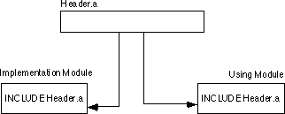

|
Table of Content | Chapter Eight (Part 11) |
|
Table of Content | Chapter Eight (Part 11) |
| CHAPTER
EIGHT: MASM: DIRECTIVES & PSEUDO-OPCODES (Part 10) |
|
| 8.19 -
Controlling the Listing 8.19.1 - The ECHO and %OUT Directives 8.19.2 - The TITLE Directive 8.19.3 - The SUBTTL Directive 8.19.4 - The PAGE Directive 8.19.5 - The .LIST, .NOLIST, and .XLIST Directives |
8.19.6
- Other Listing Directives 8.20 - Managing Large Programs 8.20.1 - The INCLUDE Directive 8.20.2 - The PUBLIC, EXTERN, and EXTRN Directives 8.20.3 - The EXTERNDEF Directive 8.21 - Make Files |
| 8.19 Controlling The Listing | |
MASM provides several assembler directives that are useful
for controlling the output of the assembler. These directives include echo, %out,
title, subttl, page, .list, .nolist, and .xlist. There are several
others, but these are the most important.
8.19.1 The ECHO and %OUT Directives
The echo and %out directives
simply print whatever appears in its operand field to the video display during assembly.
Some examples of echo and %out appeared in the sections on
conditional assembly and macros. Note that %out is an older form of echo
provided for compatibility with old source code.. You should use echo in
all your new code.
The title assembler directive assigns a title
to your source file. Only one title directive may appear in your program. The
syntax for this directive is
title text
MASM will print the specified text at the top of each page of the assembled listing.
The subttl (subtitle) directive is similar to
the title directive, except multiple subtitles may appear within your source
file. Subtitles appear immediately below the title at the top of each page in the
assembled listing. The syntax for the subttl directive is
subttl text
The specified text will become the new subtitle. Note that
MASM will not print the new subtitle until the next page eject. If you wish to place the
subtitle on the same page as the code immediately following the directive, use the page
directive (described next) to force a page ejection.
The page directive performs two functions- it
can force a page eject in the assembly listing and it can set the width and length of the
output device. To force a page eject, the following form of the page directive
is used:
page
If you place a plus sign, "+", in the operand field, then MASM performs a page break, increments the section number, and resets the page number to one. MASM prints page numbers using the format
section-page
If you want to take advantage of the section number facility, you will have to manually insert page breaks (with a "+" operand) in front of each new section.
The second form of the page command lets you
set the printer page width and length values. It takes the form:
page length, width
where length is the number of lines per page (defaults to 50, but 56-60 is a better choice for most printers) and width is the number of characters per line. The default page width is 80 characters. If your printer is capable of printing 132 columns, you should change this value to 132 so your listings will be easier to read. Note that some printers, even if their carriage is only 8-1/2" wide, will print at least 132 columns across in a condensed mode. Typically some control character must be sent to the printer to place it in condensed mode. You can insert such a control character in a comment at the beginning of your source listing.
8.19.5 The .LIST, .NOLIST, and .XLIST Directives
The .list, .nolist, and .xlist
directives can be used to selectively list portions of your source file during
assembly. .List turns the listing on, .Nolist turns the listing
off. .Xlist is an obsolete form of .Nolist for older code.
By sprinkling these three directives throughout your source file, you can list only those sections of code that interest you. None of these directives accept any operands. They take the following forms:
.list
.nolist
.xlist
8.19.6 Other Listing Directives
MASM provides several other listing control directives that this chapter will not cover. These let you control the output of macros, conditional assembly segments, and so on to the listing file. Please see the appendices for details on these directives.
Most assembly language programs are not totally stand alone
programs. In general, you will call various standard library or other routines which are
not defined in your main program. For example, you've probably noticed by now that the
80x86 doesn't provide any instructions like "read", "write", or
"printf" for doing I/O operations. In fact, the only instructions you've seen
that do I/O include the 80x86 in and out instructions, which are
really just special mov instructions, and the echo/%out directives
that perform assembly-time output, not the run-time output you want. Is there no way to do
I/O from assembly language? Of course there is. You can write procedures that perform the
I/O operations like "read" and "write". Unfortunately, writing such
routines is a complex task, and beginning assembly language programmers are not ready for
such tasks. That's where the UCR Standard Library for 80x86 Assembly Language Programmers
comes in. This is a package of procedures you can call to perform simple I/O operations
like "printf".
The UCR Standard Library contains thousands of lines of source code. Imagine how difficult programming would be if you had to merge these thousands of lines of code into your simple programs. Fortunately, you don't have to.
For small programs, working with a single source file is fine. For large programs this gets very cumbersome (consider the example above of having to include the entire UCR Standard Library into each of your programs). Furthermore, once you've debugged and tested a large section of your code, continuing to assemble that same code when you make a small change to some other part of your program is a waste of time. The UCR Standard Library, for example, takes several minutes to assemble, even on a fast machine. Imagine having to wait five or ten minutes on a fast Pentium machine to assemble a program to which you've made a one line change!
As with HLLs, the solution is separate compilation (or separate assembly in MASM's case). First, you break up your large source files into manageable chunks. Then you assemble the separate files into object code modules. Finally, you link the object modules together to form a complete program. If you need to make a small change to one of the modules, you only need to reassemble that one module, you do not need to reassemble the entire program.
The UCR Standard Library works in precisely this way. The Standard Library is already assembled and ready to use. You simply call routines in the Standard Library and link your code with the Standard Library using a linker program. This saves a tremendous amount of time when developing a program that uses the Standard Library code. Of course, you can easily create your own object modules and link them together with your code. You could even add new routines to the Standard Library so they will be available for use in future programs you write.
"Programming in the large" is a term software engineers have coined to describe the processes, methodologies, and tools for handling the development of large software projects. While everyone has their own idea of what "large" is, separate compilation, and some conventions for using separate compilation, are one of the big techniques for "programming in the large." The following sections describe the tools MASM provides for separate compilation and how to effectively employ these tools in your programs.
The include directive, when encountered in a
source file, switches program input from the current file to the file specified in the
parameter list of the include. This allows you to construct text files
containing common equates, macros, source code, and other assembler items, and include
such a file into the assembly of several separate programs. The syntax for the include
directive is
include filename
Filename
must be a valid DOS filename. MASM merges
the specified file into the assembly at the point of the include directive.
Note that you can nest include statements inside files you include. That is,
a file being included into another file during assembly may itself include a third file.
Using the include directive by itself does not
provide separate compilation. You could use the include directive to break up
a large source file into separate modules and join these modules together when you
assemble your file. The following example would include the PRINTF.ASM and
PUTC.ASM files during the assembly of your program:
include printf.asm
include putc.asm
<Code for your program goes here>
end
Now your program will benefit from the modularity gained by
this approach. Alas, you will not save any development time. The include directive
inserts the source file at the point of the include during assembly, exactly
as though you had typed that code in yourself. MASM still has to assemble the code and
that takes time. Were you to include all the files for the Standard Library routines, your
assemblies would take forever.
In general, you should not use the include directive
to include source code as shown above. Instead, you should use the include directive
to insert a common set of constants (equates), macros, external procedure declarations,
and other such items into a program. Typically an assembly language include file does not
contain any machine code (outside of a macro). The purpose of using include files
in this manner will become clearer after you see how the public and external declarations
work.
8.20.2 The PUBLIC, EXTERN, and EXTRN Directives
Technically, the include directive provides
you with all the facilities you need to create modular programs. You can build up a
library of modules, each containing some specific routine, and include any necessary
modules into an assembly language program using the appropriate include commands.
MASM (and the accompanying LINK program) provides a better way: external and public
symbols.
One major problem with the include mechanism
is that once you've debugged a routine, including it into an assembly wastes
a lot of time since MASM must reassemble bug-free code every time you assemble the main
program. A much better solution would be to preassemble the debugged modules and link the
object code modules together rather than reassembling the entire program every time you
change a single module. This is what the public and extern directives
provide for you. Extrn is an older directive that is a synonym for extern.
It provides compatibility with old source files. You should always use the extern directive
in new source code.
To use the public and extern facilities,
you must create at least two source files. One file contains a set of variables and
procedures used by the second. The second file uses those variables and procedures without
knowing how they're implemented. To demonstrate, consider the following two modules:
;Module #1:
public Var1, Var2, Proc1
DSEG segment para public 'data'
Var1 word ?
Var2 word ?
DSEG ends
CSEG segment para public 'code'
assume cs:cseg, ds:dseg
Proc1 proc near
mov ax, Var1
add ax, Var2
mov Var1, ax
ret
Proc1 endp
CSEG ends
end
;Module #2:
extern Var1:word, Var2:word, Proc1:near
CSEG segment para public 'code'
.
.
.
mov Var1, 2
mov Var2, 3
call Proc1
.
.
.
CSEG ends
end
Module #2 references Var1, Var2,
and Proc1, yet these symbols are external to module #2. Therefore, you must
declare them external with the extern directive. This directive takes the
following form:
extern name:type {,name:type...}
Name is the name of the external symbol, and type
is the type of that symbol. Type may be any of near, far, proc, byte,
word, dword, qword, tbyte, abs (absolute, which is a constant), or
some other user defined type.
The current module uses this type declaration. Neither MASM
nor the linker checks the declared type against the module defining name to
see if the types agree. Therefore, you must exercise caution when defining external
symbols. The public directive lets you export a symbol's value to external
modules. A public declaration takes the form:
public name {,name ...}
Each symbol appearing in the operand field of the public
statement is available as an external symbol to another module. Likewise, all
external symbols within a module must appear within a public statement in
some other module.
Once you create the source modules, you should assemble the file containing the public declarations first. With MASM 6.x, you would use a command like
ML /c pubs.asm
The "/c" option tells MASM to perform a "compile-only" assembly. That is, it will not try to link the code after a successful assembly. This produces a "pubs.obj" object module.
Next, assemble the file containing the external definitions and link in the code using the MASM command:
ML exts.asm pubs.obj
Assuming there are no errors, this will produce a file "exts.exe" which is the linked and executable form of the program.
Note that the extern directive defines a
symbol in your source file. Any attempt to redefine that symbol elsewhere in your program
will produce a "duplicate symbol" error. This, as it turns out, is the source of
problems which Microsoft solved with the externdef directive.
8.20.3 The EXTERNDEF Directive
The externdef directive is a combination of public
and extern all rolled into one. It uses the same syntax as the extern
directive, that is, you place a list of name:type entries in the operand field. If
MASM does not encounter another definition of the symbol in the current source file, externdef
behaves exactly like the extern statement. If the symbol does appear
in the source file, then externdef behaves like the public command.
With externdef there really is no need to use the public or extern
statements unless you feel somehow compelled to do so.
The important benefit of the externdef directive
is that it lets you minimize duplication of effort in your source files. Suppose, for
example, you want to create a module with a bunch of support routines for other programs.
In addition to sharing some routines and some variables, suppose you want to share
constants and macros as well. The include file mechanism provides a perfect
way to handle this. You simply create an include file containing the constants, macros,
and externdef definitions and include this file in the module that implements
your routines and in the modules that use those routines:

Note that extern and public wouldn't
work in this case because the implementation module needs the public directive
and the using module needs the extern directive. You would have to create two
separate header files. Maintaining two separate header files that contain mostly identical
definitions is not a good idea. The externdef directive provides a solution.
Within your headers files you should create segment
definitions that match those in the including modules. Be sure to put the externdef directives
inside the same segments in which the symbol is actually defined. This associates a
segment value with the symbol so that MASM can properly make appropriate optimizations and
other calculations based on the symbol's full address:
; From "HEADER.A" file:
cseg segment para public 'code'
externdef Routine1:near, Routine2:far
cseg ends
dseg segment para public 'data'
externdef i:word, b:byte, flag:byte
dseg ends
This text adopts the UCR Standard Library convention of using an ".a" suffix for assembly language header files. Other common suffixes in use include ".inc" and ".def".
Although using separate compilation reduces assembly time and promotes code reuse and modularity, it is not without its own drawbacks. Suppose you have a program that consists of two modules: pgma.asm and pgmb.asm. Also suppose that you've already assembled both modules so that the files pgma.obj and pgmb.obj exist. Finally, you make changes to pgma.asm and pgmb.asm and assemble the pgma.asm but forget to assemble the pgmb.asm file. Therefore, the pgmb.obj file will be out of date since this object file does not reflect the changes made to the pgmb.asm file. If you link the program's modules together, the resulting .exe file will only contain the changes to the pgma.asm file, it will not have the updated object code associated with pgmb.asm. As projects get larger, as they have more modules associated with them, and as more programmers begin working on the project, it gets very difficult to keep track of which object modules are up to date.
This complexity would normally cause someone to reassemble (or recompile) all modules in a project, even if many of the .obj files are up to date, simply because it might seem too difficult to keep track of which modules are up to date and which are not. Doing so, of course, would eliminate many of the benefits that separate compilation offers. Fortunately, there is a tool that can help you manage large projects: nmake. The nmake program, will a little help from you, can figure out which files need to be reassemble and which files have up to date .obj files. With a properly defined make file, you can easily assemble only those modules that absolutely must be assembled to generate a consistent program.
A make file is a text file that lists assembly-time dependencies between files. An .exe file, for example, is dependent on the source code whose assembly produce the executable. If you make any changes to the source code you will (probably) need to reassemble or recompile the source code to produce a new .exe file.
Typical dependencies include the following:
A make file generally consists of a dependency statement followed by a set of commands to handle that dependency. A dependency statement takes the following form:
dependent-file : list of files
Example:
pgm.exe: pgma.obj pgmb.obj
This statement says that "pgm.exe" is dependent upon pgma.obj and pgmb.obj. Any changes that occur to pgma.obj or pgmb.obj will require the generate of a new pgm.exe file.
The nmake.exe program uses a time/date stamp to determine if a dependent file is out of date with respect to the files it depends upon. Any time you make a change to a file, MS-DOS and Windows will update a modification time and date associated with the file. The nmake.exe program compares the modification date/time stamp of the dependent file against the modification date/time stamp of the files it depends upon. If the dependent file's modification date/time is earlier than one or more of the files it depends upon, or one of the files it depends upon is not present, then nmake.exe assumes that some operation must be necessary to update the dependent file.
When an update is necessary, nmake.exe executes the set of (MS-DOS) commands following the dependency statement. Presumably, these commands would do whatever is necessary to produce the updated file.
The dependency statement must begin in column one. Any commands that must execute to resolve the dependency must start on the line immediately following the dependency statement and each command must be indented one tabstop. The pgm.exe statement above would probably look something like the following:
pgm.exe: pgma.obj pgmb.obj ml /Fepgm.exe pgma.obj pgmb.obj
(The "/Fepgm.exe" option tells MASM to name the executable file "pgm.exe.")
If you need to execute more than one command to resolve the dependencies, you can place several commands after the dependency statement in the appropriate order. Note that you must indent all commands one tab stop. Nmake.exe ignores any blank lines in a make file. Therefore, you can add blank lines, as appropriate, to make the file easier to read and understand.
There can be more than a single dependency statement in a make file. In the example above, for example, pgm.exe depends upon the pgma.obj and pgmb.obj files. Obviously, the .obj files depend upon the source files that generated them. Therefore, before attempting to resolve the dependencies for pgm.exe, nmake.exe will first check out the rest of the make file to see if pgma.obj or pgmb.obj depends on anything. If they do, nmake.exe will resolve those dependencies first. Consider the following make file:
pgm.exe: pgma.obj pgmb.obj ml /Fepgm.exe pgma.obj pgmb.obj pgma.obj: pgma.asm ml /c pgma.asm pgmb.obj: pgmb.asm ml /c pgmb.asm
The nmake.exe program will process the first dependency line it finds in the file. However, the files pgm.exe depends upon themselves have dependency lines. Therefore, nmake.exe will first ensure that pgma.obj and pgmb.obj are up to date before attempting to execute MASM to link these files together. Therefore, if the only change you've made has been to pgmb.asm, nmake.exe takes the following steps (assuming pgma.obj exists and is up to date).
1. Nmake.exe processes the first dependency statement. It notices that dependency lines for pgma.obj and pgmb.obj (the files on which pgm.exe depends) exist. So it processes those statements first.
2. Nmake.exe processes the pgma.obj dependency line. It notices that the pgma.obj file is newer than the pgma.asm file, so it does not execute the command following this dependency statement.
3. Nmake.exe processes the pgmb.obj dependency line. It notes that pgmb.obj is older than pgmb.asm (since we just changed the pgmb.asm source file). Therefore, nmake.exe executes the DOS command following on the next line. This generates a new pgmb.obj file that is now up to date.
4. Having process the pgma.obj and pgmb.obj dependencies, nmake.exe now returns its attention to the first dependency line. Since nmake.exe just created a new pgmb.obj file, its date/time stamp will be newer than pgm.exe's. Therefore, nmake.exe will execute the ml command that links pgma.obj and pgmb.obj together to form the new pgm.exe file.
Note that a properly written make file will instruct nmake.exe to assembly only those modules absolutely necessary to produce a consistent executable file. In the example above, nmake.exe did not bother to assemble pgma.asm since its object file was already up to date.
There is one final thing to emphasize with respect to dependencies. Often, object files are dependent not only on the source file that produces the object file, but any files that the source file includes as well. In the previous example, there (apparently) were no such include files. Often, this is not the case. A more typical make file might look like the following:
pgm.exe: pgma.obj pgmb.obj ml /Fepgm.exe pgma.obj pgmb.obj pgma.obj: pgma.asm pgm.a ml /c pgma.asm pgmb.obj: pgmb.asm pgm.a ml /c pgmb.asm
Note that any changes to the pgm.a file will force nmake.exe to reassemble both pgma.asm and pgmb.asm since the pgma.obj and pgmb.obj files both depend upon the pgm.a include file. Leaving include files out of a dependency list is a common mistake programmers make that can produce inconsistent .exe files.
Note that you would not normally need to specify the UCR Standard Library include files nor the Standard Library .lib files in the dependency list. True, your resulting .exe file does depend on this code, but the Standard Library rarely changes, so you can safely leave it out of your dependency list. Should you make a modification to the Standard Library, simply delete any old .exe and .obj files and force a reassembly of the entire system.
Nmake.exe, by default, assumes that it will be processing a make file named "makefile". When you run nmake.exe, it looks for "makefile" in the current directory. If it doesn't find this file, it complains and terminates. Therefore, it is a good idea to collect the files for each project you work on into their own subdirectory and give each project its own makefile. Then to create an executable, you need only change into the appropriate subdirectory and run the nmake.exe program.
Although this section discusses the nmake program in sufficient detail to handle most projects you will be working on, keep in mind that nmake.exe provides considerable functionality that this chapter does not discuss. To learn more about the nmake.exe program, consult the documentation that comes with MASM.
|
Table of Content | Chapter Eight (Part 11) |
Chapter Eight: MASM: Directives &
Pseudo-Opcodes (Part 10)
26 SEP 1996